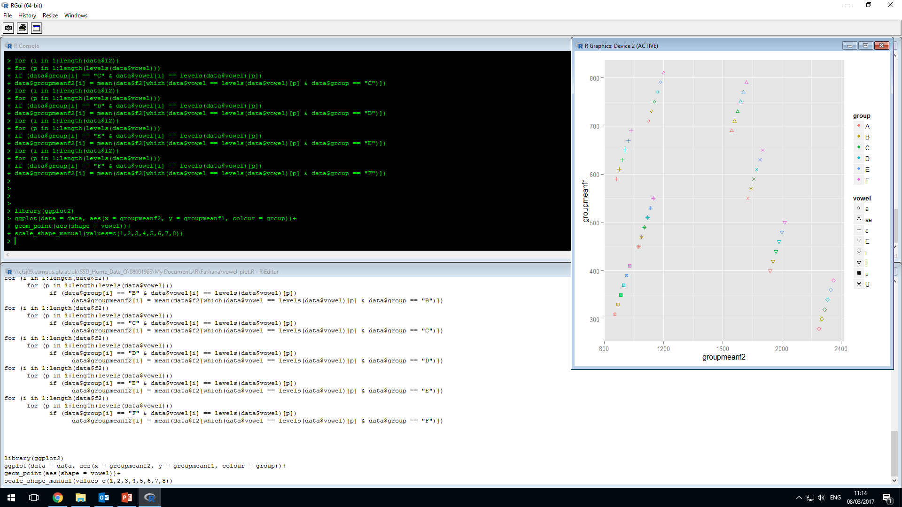
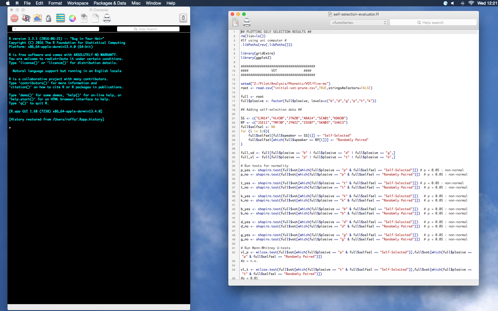
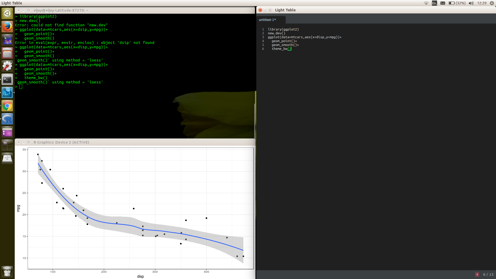

for Arts
for Arts
Session 1
March 10th 2017
About this course
R: A love-Hate relationship
Frustration is natural when you start programming in R, because it is such a stickler for punctuation, and even one character out of place will cause it to complain.
Hadley Wickam, Chief Scientist at RStudio
So, we'll do our very best to keep things light-hearted. But...
we will also get you to learn R the hard way.
Meet the tutors
Ewa Wanat |

See me for any administrative issues. |
Robert Lennon |

I'm here to help with R. |
Vijay Solanki |

I'm here to answer any and all of your questions about R. |
Course structure
Three day course, where each day covers a specific set of goals:
Day 1 - Friday 10th March
Introduces R, demonstrates basic skills and outlines proper coding and script management practices.
Day 2 - Friday 17th March
Begins to consider "real" data and how to manage, interpret and evaluate it in R.
Day 3 - Friday 24th March
Focuses on communication of findings from analyses performed in R.
Course Structure
Each day will roughly follow the same format:
- Begin at 2pm, finish at 6pm
- Start with a 1hr presentation
- Followed by 3hrs of guided practice
Where to find course content
What is R?
According to the official R website:
"R is a free software environment for statistical computing and graphics."
-
R is a language
Why use R?
- Because it’s FREE
- Because it is fit for purpose
- It is designed for data analysis
- It has a LARGE repository of packages
- It is being actively updated and maintained
- It makes sharing analyses easy
- It makes it easy to communicate your results
- Because you are not alone!
- Most R users are not programmers
- It has an active community
Say hello to
#R version 3.3.2 (2016-10-31) -- "Sincere Pumpkin Patch"
#Copyright (C) 2016 The R Foundation for Statistical Computing
#Platform: x86_64-pc-linux-gnu (64-bit)
#
#R is free software and comes with ABSOLUTELY NO WARRANTY.
#You are welcome to redistribute it under certain conditions.
#Type 'license()' or 'licence()' for distribution details.
#
#Natural language support but running in an English locale
#
#R is a collaborative project with many contributors.
#Type 'contributors()' for more information and
#'citation()' on how to cite R or R packages in publications.
#
#Type 'demo()' for some demos, 'help()' for on-line help, or
#'help.start()' for an HTML browser interface to help.
#Type 'q()' to quit R.
> #!/usr/bin/Rscript
###
## R Script for pre-processing of inquiry reports
## Written by : Vijay Solanki
## Date: 14/12/16
###
## Pre-processing warning
n = 0
while(n <1 ){
cat("WARNING: Before beginning the pre-processing, I need to know a few things.\n \n(1) Do your documents have title pages, contents etc.?\n \nIf they do then I need to know the number of pages to remove prior to pre-processing.\nPlease make a note of the number of pages to remove from both the beginning and end (back cover) of each document.\n \n")
selector <- readline("Do you have this information to hand? (y/n)\n")
if(selector == "n" | selector == "no" | selector == "No" | selector == "NO"){
#cat("Okay, please collect that information and then restart this script. \n")
stop("Okay, please collect that information and then restart this script. \n")
}else if(selector == "y" | selector == "yes" | selector == "Yes" | selector == "YES"){
cat("\nSmashing, then we may begin...\n\n")
n = 1
}else{
cat("\nPlease respond with either a y (for yes) or a n (for no). \n \n")
}
}
## Loading packages etc.
library(tm)
library(pdftools)
library(data.table)
#library(topicmodels)
## Setting up directories
setwd("/home/vijay/Documents/Strath/analysis-docs/")
root_dir <- "/home/vijay/Documents/Strath/analysis-docs/"
report_dirs <- dir()
report_no <- length(report_dirs)
report_list <- ""
for (i in 1:report_no){
report_list <- paste(report_list,report_dirs[i]," (",i,")\n",sep="")
}
rm(i)
report_text <- paste("Which report would you like to process?: \n",report_list,sep="")
n = 0
while(n<1){
selector <- readline(report_text)
sel_num <- as.numeric(selector)
if(is.na(sel_num)){
cat("Please use numeric values :p\n")
}
if(!is.na(sel_num)){
cat("Yay, thanks for using the numeric option :)\n \n \n")
selected_report <- paste(root_dir,report_dirs[sel_num],"/",sep="")
setwd(selected_report)
n = 1
}
}
rm(n)
## Print polite wait message
cat("Please bear with me, this bit can take some time... \n \n \n")
## Get number of documents in directory
n.docs <- length(list.files(pattern='*.pdf'))
## Set max.len object at 0 for use in loop
max.len <- c(0,0)
## Loop over documents checking for file with max length
for (i in 1:n.docs){
pdf.file <- list.files(pattern='*.pdf')[i]
## Extract text from the pdf file and coerce to data.table
text <- as.data.table(pdf_text(pdf.file))
## Get length (number of pages) of the pdf
pdf.len <- dim(text)[1]
## Adjust the max.len object to hold length of pdf file if larger than previously allocated
if (pdf.len > max.len[1]){
max.len[1] <- pdf.len
max.len[2] <- i
}
}
## Create data.table with appropriate dimensions
## Fill empty cells with a placeholder
doc.table <- data.table(matrix("placeholdervty267j",nrow = max.len[1], ncol = i))
## List of filenames
filenames <- list.files(pattern='*.pdf')
## Tell user how many docs in corpus
cat(paste("You have ",n.docs," document(s) in your corpus.\n\n",sep=""))
## Load in pdf files and allocate to column in doc.table
for (i in 1:n.docs){
pdf.file <- list.files(pattern='*.pdf')[i]
o = 0
while(o < 1){
## Ask user for the number of title/contents and back cover pages
## Begin while loop for collection of front page info
n = 0
while(n < 1){
front <- readline(paste("How many front pages are to be omitted from ",pdf.file," ?\n",sep=""))
front <- as.numeric(front)
if(is.na(front)){
cat("\nPlease enter a numeric value\n")
}else{ n = 1}
}
## Begin while loop for collection of back page info
n=0
while(n < 1){
back <- readline(paste("How many back pages are to be omitted from ",pdf.file," ?\n",sep=""))
back <- as.numeric(back)
if(is.na(back)){
cat("\nPlease enter a numeric value\n")
}else{ n = 1}
}
## Double check that we have the right values
n = 0
while(n < 1){
removal <- readline(paste("So, ",pdf.file, " has ",front," front pages and ",back," back pages to be removed.\n Is this correct? (y/n)\n"))
if (removal == "n"){
cat("\nOkay, let's start again for this document.\n")
n = 1
}else if (removal == "y"){
cat("\nThank you, now processing document...\n")
n = 1
o = 1
}else{
cat("\nPlease answer with either a y or a n.\n")
}
}
text <- as.data.table(pdf_text(pdf.file))
front_remove <- front + 1
back_remove <- dim(text)[1]-back
text <- text[front_remove:back_remove,]
## Allocate the text object to appropriate place in data.table
doc.table[1:dim(text)[1],i] <- text
}
}
doc.corpus <- Corpus(VectorSource(doc.table))
## inspect a particular document
#writeLines(as.character(doc.corpus[[1]]))
## Replace all values of Trust with nhstrust
f <- content_transformer(function(corpus,pattern,replace){
gsub(pattern, replace, corpus)
})
#f <- content_transformer(function(x, pattern) gsub(pattern, "", x))
doc.corpus <- tm_map(doc.corpus,f,"Trust","nhstrust")
## Transform to lower case
doc.corpus <- tm_map(doc.corpus,content_transformer(tolower))
## remove potentiallyy problematic symbols
toSpace <- content_transformer(function(x, pattern) { return (gsub(pattern, '', x))})
doc.corpus <- tm_map(doc.corpus, toSpace, '-')
doc.corpus <- tm_map(doc.corpus, toSpace, ':')
doc.corpus <- tm_map(doc.corpus, toSpace, '‘')
doc.corpus <- tm_map(doc.corpus, toSpace, '•')
doc.corpus <- tm_map(doc.corpus, toSpace, '• ')
doc.corpus <- tm_map(doc.corpus, toSpace, ' -')
doc.corpus <- tm_map(doc.corpus, toSpace, '"')
doc.corpus <- tm_map(doc.corpus, toSpace, '"')
doc.corpus <- tm_map(doc.corpus, toSpace, 'placeholdervty267j')
doc.corpus <- tm_map(doc.corpus, toSpace, 'yy')
## Remove punctuation
doc.corpus <- tm_map(doc.corpus, removePunctuation)
## Remove digits
doc.corpus <- tm_map(doc.corpus, removeNumbers)
## Remove stopwords
doc.corpus <- tm_map(doc.corpus, removeWords, stopwords('english'))
## Define custom stopwords
myStopwords <- c("yy","b", "c", "d", "e", "f", "g", "h", "j", "k", "l", "m", "n", "o", "p", "q", "r", "s", "t", "u", "v", "w", "x", "y", "z" )
## Remove custom stopwords
doc.corpus <- tm_map(doc.corpus, removeWords, myStopwords)
## Remove whitespace
doc.corpus <- tm_map(doc.corpus, stripWhitespace)
## Get all remaining words that begin with "www"
n_docs <- length(doc.corpus)
www_words = list()
for(i in 1:n_docs){
content <- paste0(doc.corpus[i]$content[[1]]$content,collapse = " ")
content <- strsplit(content," ")
content <- transpose(content)
content_vec <- grep("www",content)
www_words <- c(www_words,content[content_vec])
}
www_words <- paste0(www_words,collapse = " ")
www_words <- strsplit(www_words," ")
www_words <- www_words[[1]]
## Remove www words
doc.corpus <- tm_map(doc.corpus, removeWords, www_words)
cat('Happy days, the corpus has been constructed :) \nIt is contained in the R object -> doc.corpus \n \n \n')
report_text <- paste("Would you like to view one of the documents? (y/n): \n",sep="")
n = 0
while(n<1){
selector <- readline(report_text)
if(selector == "n" | selector == "no" | selector == "No" | selector == "NO"){
cat("Okay, I will not show you a sample of your corpus. \n")
n = 1
}else if(selector == "y" | selector == "yes" | selector == "Yes" | selector == "YES"){
writeLines(as.character(doc.corpus[[1]]))
cat("\n \n The first document from your corpus is printed above. \n")
n = 1
}else{
cat("Please respond with either a y (for yes) or a n (for no). \n")
}
}
rm(n)
report_text <- paste("Would you like me to write the corpus to file? (y/n): \n",sep="")
n = 0
while(n<1){
selector <- readline(report_text)
if(selector == "n"){
cat("\nOkay, not writing corpus to file.\n")
n = 1
}else if(selector == "y"){
out_filename <- paste(report_dirs[sel_num],'-corpus.csv',sep='')
mainDir <- dirname(dirname(getwd()))
subDir <- '/corpora/'
dir.create(file.path(mainDir, subDir))
corpus.out<-data.frame(text=unlist(sapply(doc.corpus, `[`, "content")), stringsAsFactors=F)
# writeLines(as.character(doc.corpus), con=paste(mainDir,subDir,out_filename,sep=''))
write.csv(corpus.out,paste(mainDir,subDir,out_filename,sep=''))
cat(paste("\ncorpus written to ",mainDir,subDir,out_filename,"\n",sep=""))
n=1
}else{
cat("Please respond with either a y (for yes) or a n (for no). \n")
}
}
rm(n)
cat("\nNow I just need to do a bit of housekeeping...\nTransforming corpus into a document term matrix (DTM)")
## Create document-term matrix
dtm <- DocumentTermMatrix(doc.corpus)
## Convert rownames to filenames
rownames(dtm) <- filenames
## Collapse matrix by summing over columns
freq <- colSums(as.matrix(dtm))
## Length should be total number of terms
cat("\nHere are the total number of terms in the DTM\n")
print(length(freq))
## Create sort order (descending)
ord <- order(freq,decreasing=TRUE)
## List all terms in decreasing order of freq and write to disk
n = 0
while(n < 1){
selector <- readline("\nWould you like to see the terms selected for the DTM? (y/n)\n")
if(selector == "n"){
cat("\nOkay, I will not show the terms in the DTM.\n")
n = 1
}else if(selector == "y"){
View(freq[ord])
n = 1
}else{
cat("\nPlease answer using a y (for yes) or a n (for no)\n")
}
}
n = 0
while(n < 1){
selector <- readline("\nWould you like to write the DTM to file? (y/n)\n")
if(selector == "n"){
cat("\nOkay, not writing DTM to file.\n")
n = 1
}else if(selector == "y"){
out_filename <- paste(report_dirs[sel_num],'-DTM.csv',sep='')
mainDir <- dirname(dirname(getwd()))
subDir <- '/DTMs/'
dir.create(file.path(mainDir, subDir))
write.csv(freq[ord],paste(mainDir,subDir,out_filename,sep=''))
cat(paste("\nDTM written to ",mainDir,subDir,out_filename,"\n",sep=""))
n=1
}else{
cat("\nPlease answer using a y (for yes) or a n (for no)\n")
}
}
Understanding the environment
- 2 core elements:
- Command Window
- This is where you tell R to do stuff (and where R will tell you why you've done it wrong)
- Script Window
- This is where you should be doing all of your work!
- 1 additional element:
- Plot window
- This is where you will be able to 'see' your data
The aesthetics of these windows differ between operating systems.
| Windows |  |
| Mac |  |
| Linux |  |
Working with R
As stated above, do ALL of your work in the script window. This will:
- Create a record of your work
- Allow you to comment your work for others (and your future self!)
- Make you work reproducible
Working in the command window is fine but should only be used for quick tasks that aren't important to your overall goal.
Coding Practice (CP)
Throughout this course, we will encourage some sensible general coding practices.
CP1: # everything, because #YOLO
Possibly, one of the more important pieces of advice.
In R, the # symbol will 'comment out' everything that follows it on that line.
This allows you to make comments about your work and is SUPER IMPORTANT!
Preliminaries
- It should be possible to copy any code presented in this course directly into R.
- The
#
indicates that the code in that line is a comment and will not be interpreted by R. This is true for all R code, not just the code in this course. - All output printed to the command window will be commented out to ensure that code can be run without issue, eg:
1 + 1 #[1] 2
Preliminaries
Working Directories
You will need to become familiar with the notion of "working directories". This simply indicates the folder (directory) that you are currently working out of. This is important because it dictates where your work will be saved!
In R you can find your current working directory by typing the following into the command window
getwd()There are some differences between how Windows systems and Unix based systems (Mac/Linux) manage their directory structures.
| Windows | C:\Users\vijay\Documents |
| Unix | /home/vijay/ |
The \ character has a special meaning for R. Windows users can either use \\ when writing directory paths or can use Unix style / characters.
Preliminaries
Working Directories
You can change your current working directory by using the following function
setwd()You will need to provide the function with the address of the directory you wish to change to, eg:
setwd('/home/vijay/R-for-Arts')Note that the directory address MUST be enclosed in quotation marks
CP2:
Leave yourself space!Code is hard to read at the best of times. Make life easy for yourself and put spaces between code elements.
1+2+3+4+5+6+7+8+9+101 + 2 + 3 + 4 + 5 + 6 + 7 + 8 + 9 + 10Basic Operations
In some ways R is just a glorified calculator. It can be used to perform simple arithmetic for:
Addition
1 + 1
#[1] 2
Subtraction
2 - 1
#[1] 1
Division
4 / 2
#[1] 2
Multiplication
2 * 2
#[1] 4
However, R is so much more than a simple calculator.
For instance, R is able to handle text:
'R for Arts'
#[1] "R for Arts"It can also evaluate logical statements:
2 > 1
#[1] TRUE
2 + 1 == 5
#[1] FALSENote that in the above examples, all output values are printed to the screen, eg:
1 + 1
#[1] 2This applies only to commands issued to the command window that are not assigned to an object.
Objects
- Assigning a value to an object stores it in R's memory.
- This is done using the assignment character
<-
or=
- It is recommended that
<-
is used to assign value to objects, this will save confusion in code later on.
a <- 1 + 1
a
# [1] 2CP3:
Sensible namesProviding your R objects with sensible names will save you a lot of pain in the future.
Object names require the following:
- They MUST begin with a letter
- They MUST NOT contain spaces
- They ARE case sensitive
- They can ONLY contain letters, numbers, _ and .
Be consistent in your naming convention, some example conventions are:
- this_is_snake_case
- ThisIsCamelCase
- this.uses.full.stops
Objects can contain most output that you generate from your calls to R.
a <- 1 + 1
b <- 'R for Arts'
c <- 2 > 1a
#[1] 2
b
#[1] "R for Arts"
c
#[1] TRUEThese examples show three of the four R data classes that are of interest to us.
Data classes
R has a number of different data classes, those of interest to us are:
- Numeric
- Character
- Logical
- Factor
a <- 1
class(a)
#[1] "numeric"b <- 'R for Arts'
class(b)
#[1] "character"c <- TRUE
class(c)
#[1] "logical"d <- factor(c("heads", "tails", "tails", "heads", "tails"))
class(d)
#[1] "factor"
class()Combining data
c()a <- c( 1 , 2 , 3 , 4 , 5 )
a
#[1] 1 2 3 4 5
b <- c( 'a' , 'b' , 'c' , 'd' , 'e')
b
#[1] "a" "b" "c" "d" "e"
c <- c( T , F , T , T , F )
c
#[1] TRUE FALSE TRUE TRUE FALSE
Factors cannot. This is because they are made up of smaller elements such as numerics, characters or logicals.
Factors are a special type of data class.
Factors
Factors are best used to represent categorical data. They can be thought of as a vector where each element is associated with a category, eg.
| [ 'Brian' , | 'Garfield' , | 'Claus' , | 'Mog' , | 'Nemo' ] |
| | | | | | | | | | |
| Dog | Cat | Fish | Cat | Fish |
Factors can be ordered or unordered.
Factors
This is an example of an unordered factor:
d <- factor(c("heads", "tails", "tails", "heads", "tails"))
d
#[1] heads tails tails heads tails
#Levels: heads tails
This is an example of an ordered factor:
d <- factor(c("low", "middle", "high", "high", "low"),levels=c('low','middle','high'),ordered=TRUE)
d
#[1] low middle high high low
#Levels: low < middle < high
Notice how the levels for the ordered factor have symbols indicating which element is higher.
Factors
Factors help in identifying the possible values that a variable might take even if they don't all appear in your data.
coin_toss_character <- c( 'heads' , 'heads' , 'heads' )
table(coin_toss_character)
#heads
#3
coin_toss_factor <- factor(coin_toss_character , levels = c( 'heads' , 'tails' ))
table(coin_toss_factor)
#heads tails
# 3 0
Data Structures
Do you speak vector?
R is a vector based language. Meaning that it performs operations on colections of values at the same time, rather than individually.
A vector can be thought of simply as a collection of values.
[ 1 2 3 4 5 6 7 8 9 10]
or[ 'a' 'b' 'c' 'd' 'e' 'f' 'g']
Do you speak vector?
By using vectors, R makes data analysis easier.
| 1 | 2 | 2 | ||
| 2 | 2 | 4 | ||
| 3 | X | 2 | = | 6 |
| 4 | 2 | 8 | ||
| 5 | 2 | 10 |
(Atomic) Vectors
Vectors only have 1-dimension and can contain any data class as long as they are all the same.
numeric_vector <- c( 1 , 2 , 3 , 4 , 5 )
#[1] 1 2 3 4 5
character_vector <- c( 'a' , 'b' , 'c' , 'd' , 'e' )
#[1] "a" "b" "c" "d" "e"
logical_vector <- c( T , F , F , T , T )
#[1] TRUE FALSE FALSE TRUE TRUE
Lists
Lists only have 1-dimension and can contain any data class.
mixed_list <- list( 1 , 'a' , TRUE , 63 , FALSE )
#[[1]]
#[1] 1
#[[2]]
#[1] "a"
#[[3]]
#[1] TRUE
#[[4]]
#[1] 63
#[[5]]
#[1] FALSEMatrices
Matrices have 2-dimensions and can contain any class of data as long as they are all the same.
numeric_matrix <- matrix(0,2,2)
# [,1] [,2]
#[1,] 0 0
#[2,] 0 0
character_matrix <- matrix('R',2,2)
# [,1] [,2]
#[1,] "R" "R"
#[2,] "R" "R"
logical_matrix <- matrix(T,2,2)
# [,1] [,2]
#[1,] TRUE TRUE
#[2,] TRUE TRUE
Data Frames
Data frames have 2-dimensions and can contain any class of data.
mixed_data_frame <- data.frame(c(1,2,3),c('a','b','c'),c(T,F,F))
# c.1..2..3. c..a....b....c.. c.T..F..F.
#1 1 a TRUE
#2 2 b FALSE
#3 3 c FALSE
The data frame is probably the most common data structure that you will work with.
Notice that the character vector does not have quotation marks.
This is a built in process of data frames, character vectors are automatically converted to factors
Summarising data structures
| Homogeneous | Heterogeneous | |
|---|---|---|
|
1d |
Atomic Vector |
List |
| 2d | Matrix | Data Frame |
| nd | Array |
Table from Advanced R
Functions
Functions can be thought of as series of commands that are collected into a single object.
mean()a <- c( 1 , 2 , 3 , 4 , 5)
mean(a)
#[1] 3
The same result could also be achieved by performing the arithmetic:
a <- (1 + 2 + 3 + 4 + 5) / 5
a
#[1] 3Some handy functions:
| Object Management | Object Management (cont.) | ||
|---|---|---|---|
| Removes objects | |
Get levels of factor | |
| Lists objects | |
Is object a numeric | |
| Gets object data class | |
Is object a character | |
| Gets object structure | |
Is object a logical | |
| Gets object length | |
Is object a factor | |
| Gets object dimensions | |
Remove all objects |
|
Some (more) handy functions:
| Window Management | File Management | ||
|---|---|---|---|
| Closes R | |
Lists files in wd | |
| Opens plot window | |
Lists files in wd | |
| Closes plot window | |
Gets wd | |
| 'See' your data |
|
Sets wd | |
| Runs saved script | |
||
Understand by doing
As with many things, the best way to understand how something works is to build it yourself.
One of the powerful things about R is that if you need a function and it doesn't exist, you can write it yourself!
The general form of a function is:
function_name <- function( ){
stuff what the function goes and does
}Understand by doing
If you type most functions into R's command window without their accompanying brackets, ie. ( ), you will see the code for that function, eg:
View
#function (x, title)
#{
# check <- Sys.getenv("_R_CHECK_SCREEN_DEVICE_", "")
# msg <- "View() should not be used in examples etc"
# if (identical(check, "stop"))
# stop(msg, domain = NA)
# else if (identical(check, "warn"))
# warning(msg, immediate. = TRUE, noBreaks. = TRUE, domain = NA)
# if (missing(title))
# title <- paste("Data:", deparse(substitute(x))[1])
# as.num.or.char <- function(x) {
# if (is.character(x))
# x
# else if (is.numeric(x)) {
# storage.mode(x) <- "double"
# x
# }
# else as.character(x)
# }
# x0 <- as.data.frame(x)
# x <- as.list(format.data.frame(x0))
# rn <- row.names(x0)
# if (any(rn != seq_along(rn)))
# x <- c(list(row.names = rn), x)
# if (!is.list(x) || !length(x) || !all(sapply(x, is.atomic)) ||
# !max(lengths(x)))
# stop("invalid 'x' argument")
# if (grepl("darwin", R.version$os))
# check_for_XQuartz()
# invisible(.External2(C_dataviewer, x, title))
#}
Understand by doing
So, lets say that we want to write a function that calcuates the mean of a numeric vector. We need to know 2 things:
- The number of elements in the vector
- The sum of the elements in the vector
If we know both of these things, we can write the function!
Understand by doing
# My function to calculate the mean of a numeric vector
my_mean <- function( x ){ # x is the input numeric vector
element_no <- length( x ) # Here I find out the number of elements in teh vector
vector_sum <- sum( x ) # Here I sum the elements in the vector
input_mean <- vector_sum / element_no # Here I calculate the mean
return( input_mean ) # Here I return the calculation to the global environment
}
a <- c( 1 , 2 , 3 , 4 , 5 , 6 , 7 , 8 , 9 , 10 )
my_mean( a ) == mean( a )
#[1] TRUE
Functions are a bit like Las Vegas.

What happens in a function, stays in a function
return()Getting help
Ask R
R has a number of in-built functions for getting help. These examples use the mean function as a test case.
If you know the function name use
help(mean)?meanhelp.search('mean')??meanListen to R
If R gets upset with you and throws an error, the very first thing to do is look at the error message.
Although R is very picky about how you give it instructions, it is also very vocal about why it is upset with you. Reading the error message often points to the solution to the problem.
If all else fails, ask Google
The beauty of R being open source is that someone else is likely to have already encountered your error (or at least something similar).
Some useful websites include:
Exercises
Understanding the environment
- Identify the command window and describe its use.
- Would you use this window for recording your analyses?
- How would you use this window to close R?
- Would you use the # character in this window?
- Identify the script window and describe its use.
- Would you use this window for recording your analyses?
- What purpose does the # character serve in this window?
- Should you be using the # character regularly in this window? Why?
Understanding the environment
- Use the command window to bring up a plot window.
- Use the command window to close the plot window
- Explain what the "workspace image" is.
- Why is it important to not rely on the workspace image?
- Would you save your workspace image at the end of an R session? Why?
Dealing with working directories
- Use R to determine your current working directory. What is it?
- Use R to change your current working directory.
- What is the core difference between how windows and Unix systems write file paths?
- Is there a way to write file paths that is consistent across operating systems?
- There are two ways to list the files in your new working directory. What are they?
- Use both to determine the contents of your working directory and assign the output to an object.
Basic Operations
- Produce a numeric vector of length 1
- How do you know it has a length of 1? Use an appropriate function to find its length
- Produce a character vector of length 1
- How do you know it has a length of 1? Use an appropriate function to find its length
- Produce a logical vector of length 1
- How do you know it has a length of 1? Use an appropriate function to find its length
Basic Operations
- Without running any of this code, try to determine if the code will work. Give reasons.
a <- c( 1 , 2 , 3 , 4 , 5 )a <- c( 1 , 'a' , 3 , 'b' , 5 )a <- list( 1 , 2 , 3 , 4 , 5 )a <- list( 1 , 'a' , 3 , 'b' , 5 )a <- c( 1 , 2 , 3 , 4 , 5 ) b <- c( 'a' , 'b' , 'c' , 'd' , 'e') a - ba <- c( 1 , 2 , 3 , 4 , 5 , 6 ) b <- c( 1 , 2 , 3 ) c <- a + ba <- c( 1 , 2 , 3 , 4 , 5 ) b <- c( 1 , 2 , 3 ) c <- a + b
Basic Operations
- Now run the code from exercise 4 to see if your predictions were correct. Were there are results that surprised you? If so, discuss why the code performed in the way that it did.
Basic Operations
- If velocity = distance / time, use these two numeric vectors to calculate velocity and assign it to an object
distance <- sample(5:100) time <- sample(200:295)- Do you answers match to your neighbours' answers? If not, why might this be?
Basic Operations
- How would you change a vector into an unordered factor? Write the code to do this.
- How would you change a vector into an ordered factor? Write the code to do this.
Data Structures
- Why does the use of vectors help to make R good for data analysis?
- How would you describe a vector?
- How many dimensions does a vector have?
- Can a factor be a vector? How would you check?
Data Structures
- What types of element can be contained in a list?
- How would you describe a list?
- How many dimensions does a list have?
- Can a factor be a list? How would you check?
Data Structures
- What types of element can be contained in a matrix?
- How would you describe a matrix?
- How many dimensions does a matrix have?
- Can a factor contained in a matrix? How would you check?
Data Structures
- What types of element can be contained in a data frame?
- How would you describe a data frame?
- How many dimensions does a data frame have?
- Can a factor contained in a data frame? How would you check?
Data Structures
- Go around your group collecting the following information, assigning the information to an appropriate vector:
- Name
- Age
- Coin toss result
- University
- Subject studied
- In your group, discuss how to link this data together. What data structure would you use and how ould you do it?
Functions
- Go back to the slides that present some 'handy functions' and make sure that you know how to use all of them.
- After having familiarised yourself with those functions, think about what the following code would do but don't run it.
view()q( 'no' )setwd( /home/vijay )rm( list <- ls() )class( F )str( length )
Functions
- Run the code from exercise 2, did it do what you expected? If not, why?
- Write a function that reverses a numeric vector and shows the result in a new window (not the command window).
- The Pythagorean theorem states that, for a right-angle triangle, the square of the hypotenuse (the side opposite the right angle) is equal to the sum of the squares of the other two sides. Given that the formula for finding the square of the hypotenuse of a right-angle triangle is a2 + b2 = c2 write a function that will return the hypotenuse given a and b.
Getting help
- Find the help page for the
function usingc()? - Find the help page for the
function using thestr()
functionhelp() - Find a function that will
a matrix. Usetranspose
to do this??- How do you use the function that you found?
- Find a function that will calculate the
of a vector. Use thestandard deviation
function to do thishelp.search()- How do you use the function that you found?
- Find a function that will save your script for you and use it to save your work so far.
Project 1: Coding a simple calculator
To complete this project you will need to look up the usage of the following functions:
as.integer()readline()prompt()switch()print()paste()You will also need to refer to the section in this presentation about functions.
See the next slide for further details...
Project 1: Coding a simple calculator
The code below is missing some vital elements, make adjustments so that the my_calc function takes two numbers from the user and returns the result of the requested calculation.
my_calc <- function(,){
select = as.integer(readline(prompt="Choose operator number[1(+) 2(-) 3(*) 4(/)]: "))
operator <- switch(,"","","","")
result <- switch( , , , , )
print(paste(, operator, , "=", ))
}Project 2: Coding a Mad Lib Generator
Adapt the code provided below to produce a mad lib generator.
# Hint
# a = adjective
# n = noun
# v = verb
mad_lib <- function(){
story <- c('I walk through the', n1 ,'jungle. I take out my', a1, 'canteen. There is a',
a2, 'parrot with a', a3, n2, 'in its mouth right in front of me in the',
a4, 'trees! I gaze at its', a5, n3, '. A sudden sound awakes me from my daydream! A panther',
v1, 'in front of my head! I', v2, 'its ', a6, 'breath. I remember I have a packet of',
n4, 'that makes it go into a deep slumber! I ', v3, 'it away in front of the', n5,
'. Yes it is eating it! I ', v4, 'away through the', a7, 'jungle.',
'Phew; It has been an exciting day in the jungle.')
cat(story)
}
Once you've accomplished that, re-write the story with a tale of your own making.
Are there any functions you don't recognise? If there are, find out what they do?
Project 3: How much to tip?
Imagine that you're having a meal with some friends at a restaurant. You've come to the end of the meal and it is time to pay. Use R to calculate the following:
- The total amount to tip when the agreed tip is 10% of the total bill
- The total amount to tip per person when the agreed tip is 15% of the total bill
- The amount that each person should tip based on what they spent individually
Project 3: How much to tip?
Think about what you need to know in order to calculate the tip for questions 1, 2 and 3.
- Use that information to build a tip calculator that can perform the calculations in questions 1, 2 and 3.